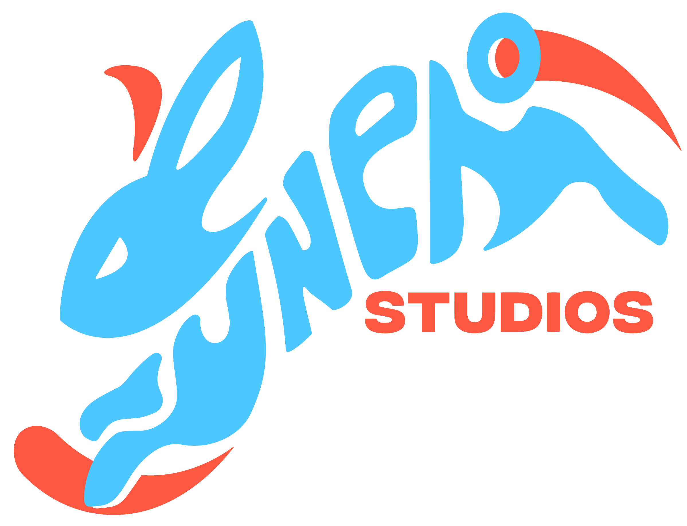

Projects
Kuneho Studios - Project Radiance
At the end of 2023, a couple of friends and I formed Kuneho Studios, an indie game development company. As making games is a passion of many of the members, we set out to make our first game - Project Radiance. Project Radiance is an in-development multi-lane rhythm game. It will feature originally composed and recorded music in a catalog of songs, paired with modifiers and consumables to give the player a new challenge each time they play. There are also collectibles the player can gather along the way as they work towards mastery level for each song.
In March 2024, we attended the Game Developers Conference in San Francisco, California. There we attended numerous talks to learn more from people who have done this before as well as spoke with numerous people (such as the founder of the conference!) to talk about our game and their experiences. We showcased and demoed our game for the first time at an indie game event where we were able to gather lots of feedback and comments about our game along with getting interested people to join our preliminary mailing list for future updates of the game.
Built in Unreal Engine and written in C++, I work mainly as the UI/UX engineer alongside the lead gameplay engineer to construct the core gameplay loop. At the time of writing, I am responsible for creating the inventory and crafting system, as well as constructing the entire tutorial to teach new players everything there is to know about playing Project Radiance.
You can learn more about Kuneho Studios and the development of Project Radiance here

Discord Bot
Due to the coronavirus and not being able to work at the beginning of the summer, I decided to spend some of my time furthering my use of Python and figured creating a Discord bot would be a fun and different way to go about this. The part that was the most enjoyable and look to continue working on in the future is the mini casino games. Currently, there is a dice game, blackjack, roulette, and a coin flip. Using the knowledge from a previous database course, I was able to store all the information from the games played as well as the players. Players have a currency and can bet against players or the bot in the various games. For the sake of bragging rights, a leaderboard is also available to be seen. Using the bot and databases, I also added a way to import matches from various video games so that I could keep the data when significant data is collected. This was the source of my data for the Google Data Analytics Professional Certificate capstone project. I made a report using my Counter-Strike: Global Offensive match data, which can be viewed here. Since the start of Counter-Strike 2, I have continued to collect all my data and plan on doing this again with a fresh and more complete dataset.
This bot is a perpetual project such that when a decent idea for it comes along, will work towards implementing it.
Personal Website
A personal website to neatly organize and display my information. An easy to add to a portfolio, I look to renovate every so often to keep working on my front-end skills and learning new things. This iteration is forked from a repository that supports Stellar by HTML5Up. The previous website iteration was located here